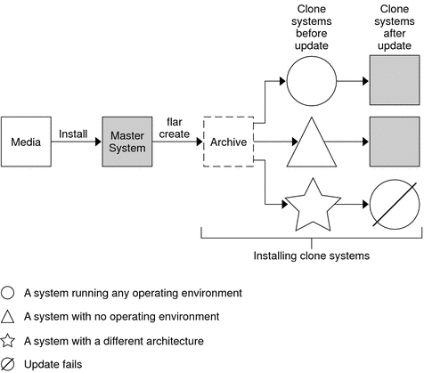
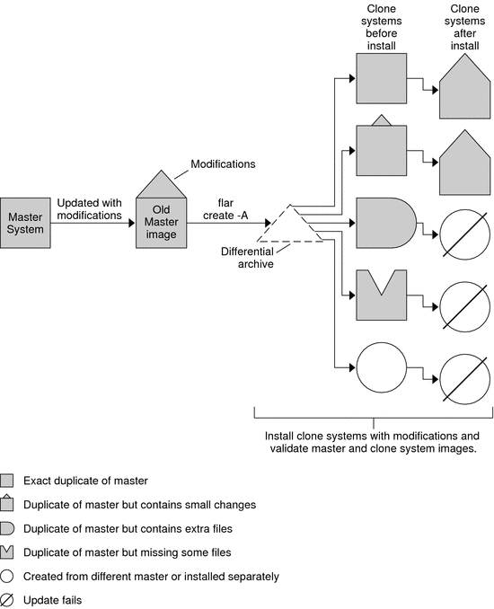

|
|||
|
3. Creating Solaris Flash Archives (Tasks) 4. Installing and Administering Solaris Flash Archives (Tasks) |
Solaris Flash IntroductionThe Solaris Flash installation feature enables you to use a single reference installation of the Solaris OS on a system, which is called the master system. Then, you can replicate that installation on a number of systems, which are called clone systems. You can replicate clone systems with a Solaris Flash initial installation that overwrites all files on the system or with a Solaris Flash update that only includes the differences between two system images. A differential update changes only the files that are specified and is restricted to systems that contain software consistent with the old master image. Installing Clone Systems With an Initial InstallationYou can install a master system with a Solaris Flash archive for an initial installation by using any installation method: Solaris installation program, custom JumpStart, Solaris Live Upgrade, or WAN boot. All files are overwritten. The Solaris Flash installation is a five-part process.
For step-by-step instructions, see Installing the Master System. Figure 1-1 shows an installation of clone systems with an initial installation. All files are overwritten. Figure 1-1 Solaris Flash Initial InstallationUpdating Clone Systems With a Solaris Flash Differential ArchiveIf you have a clone system and want to update that system, you can create a differential archive that contains only the differences between two images, the unchanged master image and an updated master image. When you update a clone system with a differential archive, only the files that are in the differential archive are changed. You can choose to install a Solaris Flash differential archive with the custom JumpStart installation method or Solaris Live Upgrade. An update is a five-part process.
Figure 1-2 shows the creation and installation of a differential archive. A master image is updated with some modifications. These modifications could be as simple as the addition, reconfiguration, or deletion of a few files, or as complex as propagating patches. The updated master image is compared to the unchanged master image. The differences between the two images become the differential archive. The archive can be used to update other clone systems that are currently using the unchanged master image. If the clone system has already been modified or is not running the unchanged master image, the update fails. If you have many changes to make on the clone systems, you can do an initial installation at any time. Figure 1-2 Solaris Flash Update |
||
|